In this lesson you will learn
|
Clumpiness, scale by scale
The universe is lumpy on some scales and smooth on others. To describe this, cosmologists break the density field into waves of different wavelengths, exactly like splitting sound into frequencies. Each wave has a wavenumber
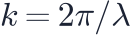
: smallThe matter power spectrum is the average squared
amplitude of the waves with wavenumber  :
:
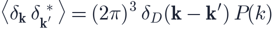
In words: a large means strong density fluctuations on scales of about
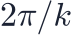
. The quantity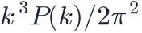
is the variance ofUnits Wavenumbers are usually quoted in /Mpc and in (Mpc/)³, where 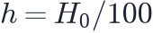 km/s/Mpc. This removes the uncertainty in the Hubble constant from the comparison of surveys. |
For a Gaussian random field, which the early universe was to excellent precision, the power spectrum contains all statistical information. It is the Fourier-space twin of the correlation function of lesson L5.2.
The primordial spectrum
Inflation predicts that the initial fluctuations had a power-law spectrum
with close to 1. The case
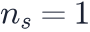
is called scale-invariant (Harrison–Zel'dovich): the gravitational potential fluctuations have the same strength on every scale. Planck measures , slightly below 1, a key clue about inflation.Processing: the transfer function
The spectrum we see today is not the primordial one. Each mode's growth depended on when it entered the horizon, which the transfer function
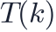
describes:- Large scales () entered the horizon after matter–radiation equality. They grew steadily the whole time: and .
- Small scales () entered during the radiation era, when
growth stalled (the Mészáros effect of lesson L5.3). The smaller
the scale, the longer it waited:
 falls roughly as
falls roughly as 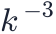
.
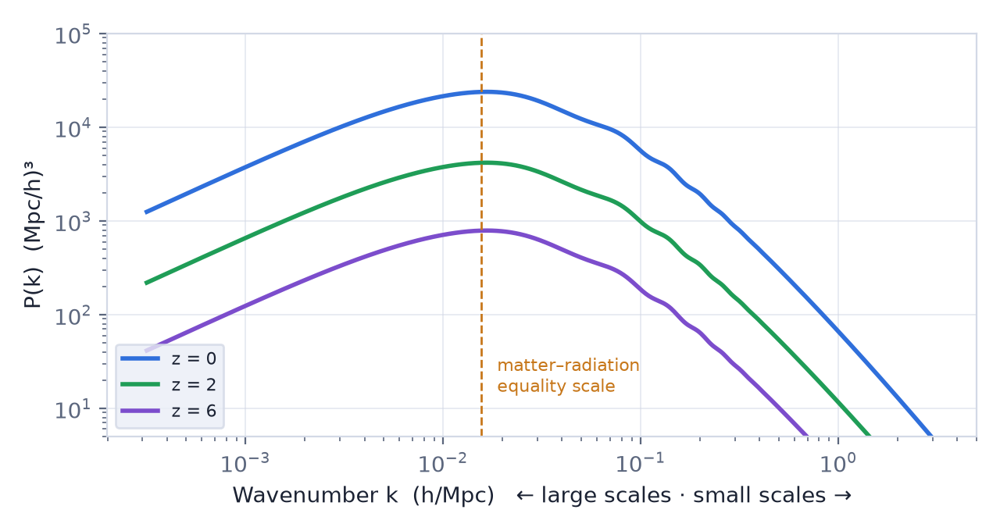
The turnover measures matter density The peak of sits at the scale that entered the horizon at matter–radiation equality, , a wavelength of about 400 Mpc/. Its position depends on 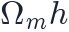 , so the shape of the power spectrum measures the total matter density. In 1990 the APM galaxy survey found more power on large scales than a universe with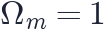 allows: one of the first hints of a low-density universe. |
Two smaller features are imprinted on top:
- Baryon acoustic oscillations: wiggles of a few percent near –/Mpc (lesson L5.2).
- Baryon suppression: before recombination baryons could not cluster, so a universe with more baryons has less small-scale power.
The amplitude: σ8
Instead of , cosmologists quote σ8: the root-mean-square fluctuation of matter in spheres of radius 8 Mpc/, calculated with linear theory. That scale was chosen because the galaxy number fluctuations on it are close to 1.
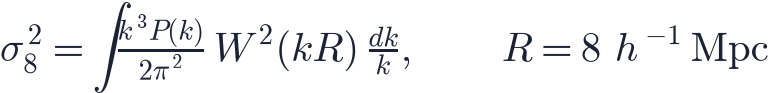
where is the Fourier transform of a sphere. Planck gives .
The S8 tension Weak gravitational lensing surveys (lesson L5.6) find
|
Growth over time
All linear modes grow together, so the whole spectrum simply moves up as
: at redshift 2 the power was about 5.7 times lower than today, at redshift 6
about 30 times lower. On small scales today,  has exceeded 1 and linear theory
fails. There, gravity transfers power from large to small scales and rises
above the linear prediction.
has exceeded 1 and linear theory
fails. There, gravity transfers power from large to small scales and rises
above the linear prediction.
Try it: 2D N-body Structure Formation Change the spectral index n in the N-body simulator. More negative values put more power on large scales and give big coherent filaments; values near zero give many small clumps. |
How P(k) is measured
- Galaxy redshift surveys (SDSS, 2dFGRS, DESI, Euclid) measure the clustering of
galaxies. Galaxies are biased tracers: , with a bias
 of order 1–3 that must be modelled.
of order 1–3 that must be modelled. - Weak lensing measures the matter itself, dark matter included.
- The Lyman-α forest: absorption by hydrogen clouds in quasar spectra probes small scales at redshifts 2–5.
- The CMB measures the primordial spectrum on the largest scales.
Together they trace the same ΛCDM spectrum over more than three decades in scale, from thousands of Mpc down to about 1 Mpc.
Remember this
|